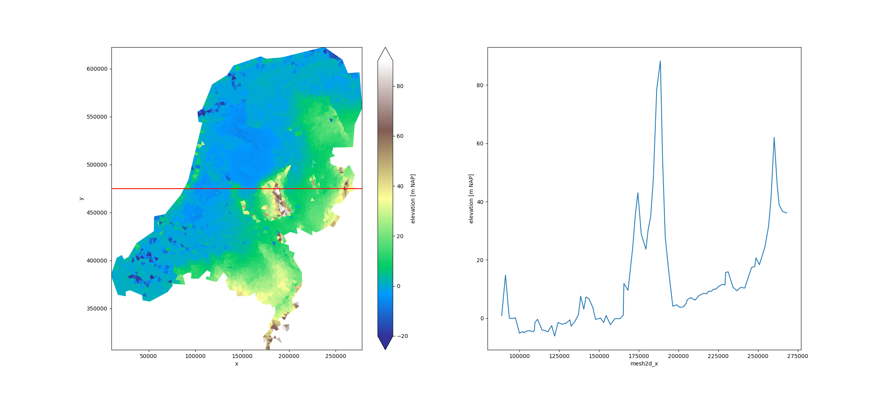

Note
Go to the end to download the full example code
Elevation NL#
This is a small dataset containing a triangulation of a digital elevation model of the Netherlands.
[<matplotlib.lines.Line2D object at 0x7f786be87430>]
import matplotlib.pyplot as plt
import xugrid
uda = xugrid.data.elevation_nl()
section_y = 475_000.0
section = uda.ugrid.sel(y=section_y)
fig, (ax0, ax1) = plt.subplots(figsize=(22.6, 10), ncols=2)
uda.ugrid.plot(ax=ax0, vmin=-20, vmax=90, cmap="terrain")
ax0.axhline(y=section_y, color="red")
section.plot(ax=ax1, x="x")
Total running time of the script: ( 0 minutes 1.018 seconds)